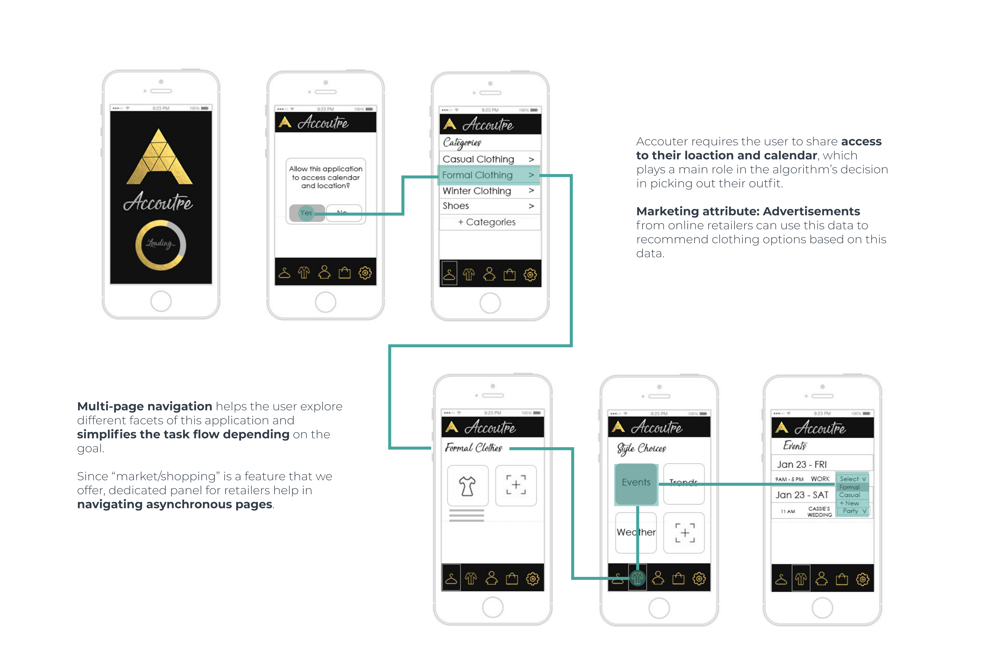

Introduction
Guess they weren't completely Clueless in 1995!

"The funny thing with decisions is that when you make them, you actually expend mental energy. If you make too many decisions in too short a time frame, you significantly reduce your decision-making ability."
-Steve Jobs
Time and time again, we have heard of the phrase "Dress for the job you want". So many of us in the tech industry seldom want to spend time on our clothes but still desire to present ourselves better. Like Steve Jobs, you don't have to spend time on dressing up every morning while using Accouter.
Accoutre is a mobile application for dressing, that is aimed at providing suggestions and allowing its users to pick out clothes, either based on the current weather outside, or the weather throughout the day, or/and based on an occasion or an event that they are to attend, such as a party, wedding, interview, sports activity, and so on, scheduled on their calendar or in their emails.
Brainstorming
From the data collected through our contextual inquiries, we could identify the primary stakeholders of our application, that is, the end users who own and use a smartphone, and ones who need help in picking out clothes based on the current weather outside, or an event they are to attend.
Based on the information gathered from our study models – flow models, sequence models, artifact models, physical models, and cultural models, we consolidated our findings into an affinity diagram, and a consolidated sequence model.
Contextual Inquiry
In the first few meeting sessions, we discussed the contextual inquiries that were conducted as part of the previous assignment. We discussed each participant interview and their findings in detail.
In general, for all the participants who we interviewed, the main findings were that they either:
- Users check the current weather outside or the weather throughout the day, using a reliable weather app, before picking out clothes for that day.
- They select clothes based on an occasion or an event, such as a party, wedding, interview, sports activity, and so on.
- They pick out clothes randomly.
- They use applications such as Instagram or Pinterest to follow fashion trends and be aware.
Read more about the contextual inquiry I conducted: Click Here
Flow Model
Flow diagrams helped my team and I identify physical entities, understanding triggers and list both user and application intentions.
Without the use of our application, the user will:
- Look up weather in forecast app or look outside to determine what they want to wear.
- Check their calendar to identify the events they are going to and the dress code required.
- Look through their wardrobe to identify the clothes they want to wear for the day.
- Shop for clothes for events they might need in the future.
- Inventory of the clothes that are waiting to be laundered.
Sequence Models
Sequence model would have to be one of the most important steps in our design process for this application because after identifying the different components that would go into this app, determining the user flow became very convoluted. Creating sequence flows of every participant in our study, solidified our assumptions about how we can map out a user flow for Accouter.
Cultural Models
One of the most interesting things that our team could bring to this project is the different cultural values we have when it comes to dressing day to day. As an Indian, formal clothing is very different to me than what it is to an average American. One of the aspects we would love exploring dress code and fashion for immigrants in various American settings. It will be helpful for anyone travelling abroad to anticipate what type of attire would be socially acceptable in the country they're travelling to. Getting insight from friends who live in India as well as people in the US, I was able to categorize cultural entities into three sections – Social Setting, Geographical Location and Clothing Trends. Even though 2 out of 3 participants were working professionals, they had different dress codes depending on the day and the type of weather they were having. Even though the college student was not restricted by dress code, she was concerned about the latest trends and affordable clothing. All three participants were concerned about the social acceptance of their attire on a day to day basis.
Storyboarding
Problem Scenario
Each morning, Jenny wakes up and checks the calendar application and e-mail notifications on her phone. She then takes a shower, and randomly picks out clothes to wear to work. Since her office is 10 minutes away from her home, she usually walks to work. One day, on her way to work, it started to pour suddenly. Because Jenny was not prepared for the rain, and did not have a raincoat or an umbrella with her, her clothes and bag got completely drenched.
Storyboarding
Design Scenario
Ever since Jenny started using the Accoutre app, she wakes up each morning and checks the app, along with other notifications on her phone. She then takes a shower, and wears the clothes suggested by the Accoutre app, based on the current weather outside, and/or an occasion or event she must attend, like a boarding meeting or a party. The app helps her pick out the appropriate outfit each time.
Read more about the contextual inquiry I conducted: Click HereLo-Fi Prototype
To narrow down on the design ideas for our application from the users' perspective, we identified the following tasks and features as they relate to the goals:
- Sync with the calendar application.
- Access to user’s current location.
- Access and connect to the weather application.
- Sort clothes based on categories, for example – type, fabric or season.
- Option to feed-in clothes present in user’s current wardrobe under each category.
- Run algorithms to choose and suggest clothes based on weather, events, or fashion trends.
- Option to choose and mix-and-match clothes manually, in case the algorithm gets it wrong.
- Suggestion to shop for clothes online, based on current requirement and unavailability in user’s closet.
- Suggestion of suitable online retailers, and direction to their official websites


Userflow Diagrams

Specific Tasks and App Features
To narrow down on the design ideas for our application from the users' perspective, we identified the following tasks and features as they relate to the goals:
- Sync with the calendar application.
- Access to user’s current location.
- Access and connect to the weather application.
- Sort clothes based on categories, for example – type, fabric or season.
- Option to feed-in clothes present in user’s current wardrobe under each category.
- Run algorithms to choose and suggest clothes based on weather, events, or fashion trends.
- Option to choose and mix-and-match clothes manually, in case the algorithm gets it wrong.
- Suggestion to shop for clothes online, based on current requirement and unavailability in user’s closet.
- Suggestion of suitable online retailers, and direction to their official websites.